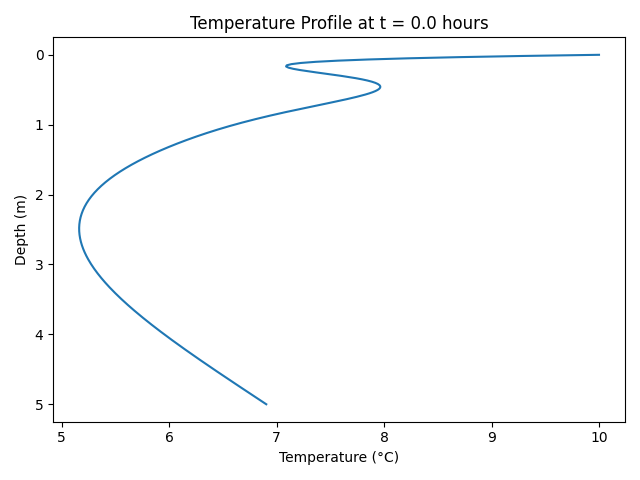
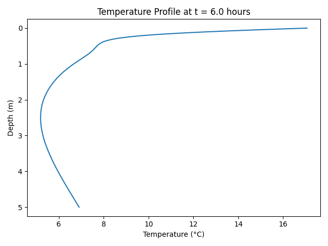
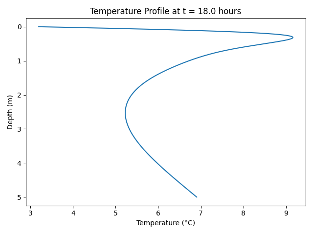

import numpy as np import matplotlib.pyplot as plt import matplotlib.animation as animation
thermal_diffusivity = 1e-6 annual_amplitude = 15 diurnal_amplitude = 7 mean_surface_temperature = 10 seconds_per_day = 24 * 3600 annual_period_seconds = 365 * seconds_per_day diurnal_period_seconds = seconds_per_day annual_angular_frequency = 2 * np.pi / annual_period_seconds # ω₁ diurnal_angular_frequency = 2 * np.pi / diurnal_period_seconds # ω₂ annual_damping_coefficient = np.sqrt(annual_angular_frequency / (2 * thermal_diffusivity)) # a₁ diurnal_damping_coefficient = np.sqrt(diurnal_angular_frequency / (2 * thermal_diffusivity)) # a₂
"""computes temp at a specific time"""
def compute_temperature(depth_array, time_seconds):
annual_component = (
annual_amplitude * np.exp(-annual_damping_coefficient * depth_array)
* np.sin(annual_angular_frequency * time_seconds - annual_damping_coefficient * depth_array)
)
diurnal_component = (
diurnal_amplitude * np.exp(-diurnal_damping_coefficient * depth_array)
* np.sin(diurnal_angular_frequency * time_seconds - diurnal_damping_coefficient * depth_array)
)
return mean_surface_temperature + annual_component + diurnal_component
"""animates temp at depths/time"""
def animate_temperature(depth_array, time_step_seconds, total_frames):
fig, axis = plt.subplots()
temperature_line, = axis.plot([], [], lw=2)
axis.set_xlim(0, 25)
axis.set_ylim(depth_array.max(), depth_array.min())
axis.set_xlabel("Temperature (°C)")
axis.set_ylabel("Depth (m)")
title_text = axis.set_title("")
def initialize():
temperature_line.set_data([], [])
title_text.set_text("")
return temperature_line, title_text
def update(frame_index):
current_time = frame_index * time_step_seconds
temperature_profile = compute_temperature(depth_array, current_time)
temperature_line.set_data(temperature_profile, depth_array)
current_time_days = current_time / seconds_per_day
title_text.set_text(f"Time: {current_time_days:.2f} days")
return temperature_line, title_text
ani = animation.FuncAnimation(
fig, update, frames=total_frames, init_func=initialize,
interval=100, blit=True)
return ani
"""
starts animation
"""
if __name__ == '__main__':
depth_values = np.linspace(0, 5, 300) # Depths from 0 to 5 meters
time_step_seconds = diurnal_period_seconds / 10 # Δt = P₂ / 10
simulation_days = 3
number_of_frames = int((simulation_days * diurnal_period_seconds) / time_step_seconds)
print("=== Heat Wave Animation Configuration ===")
print(f"Thermal diffusivity: {thermal_diffusivity:.1e} m²/s")
print(f"Annual amplitude: {annual_amplitude} °C")
print(f"Diurnal amplitude: {diurnal_amplitude} °C")
print(f"Average surface temperature: {mean_surface_temperature} °C")
print(f"Depth range: 0 to {depth_values[-1]:.1f} meters")
print(f"Time step: {time_step_seconds:.0f} seconds")
print(f"Simulation duration: {simulation_days} days")
print(f"Total frames: {number_of_frames}")
print("Launching animation...")
animation_object = animate_temperature(depth_values, time_step_seconds, number_of_frames)
plt.show()


